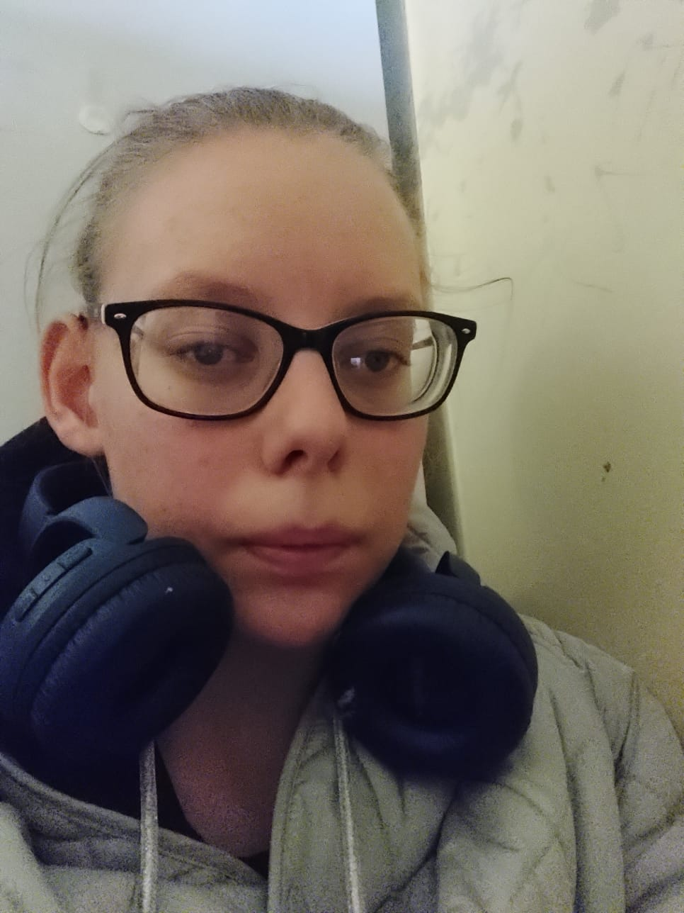

Na początku chciałam być UX/UI design'erką jednak lepliej, się czuje w programowaniu stron WWW na Front-End:)
Zainteresowałam się programowaniem mając 13-14 lat w 7. klasie szkoły podstawowej.

W szkole nikt mi nie pomagał rozwijać się w programowaniu stron WWW. Uczyłam się samodzielnie. Jednak jestem osobą która ma śilną motywacje i nie daje sobie wmawiać nie istotnych rzeczy.
Na początku zaczęłam od języka programowania JS (JavaScript), następnie Python'a. Jednak ostatecznie uczę się:
HTML5.
CSS3
BS5 (Bootstrap5)
JS.
WP (WordPress).
Biblioteka JS JQuery.
Wybrałam śćieżkę Front-End ponieważ lubię pracować z rzeczami wizualnymi oraz pisać kod/skrypty.
Motywacja
Jestem bardzo śilnie zmotywowana do pracy w IT w WEB development (Junior Front-End dev.).
Potrafię nawet zaczynać projekt o 23:00 a kończyć go o godz. nawet 04:00.